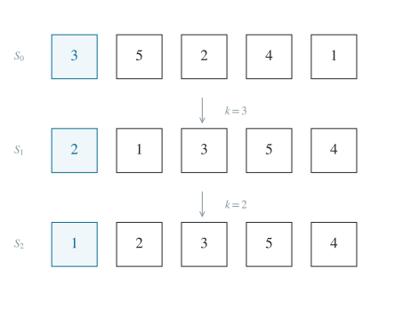

稳定分组排序与集合划分计数
从首项分类建立精确递推，再与集合划分对应，证明可排序排列数的上界。
1 题目
有 张编号分别为 到 的卡片，所有横向排列等可能。初始排列记为 。一次“完整操作”由以下三步组成。
第一步：取出最左边的卡片，记其编号为 。
第二步：剩余卡片中，小于 的卡片按原有左右顺序记为 ；大于 的卡片按原有左右顺序记为 。没有相应卡片时，该组为空。
第三步：重新排列为 。
每次都对当前整个排列执行上述操作，继续取整个排列的最左卡片。
（1）初始排列为 ，写出连续两次完整操作后的排列。
（2）求初始排列经过一次完整操作后恰好得到 的概率。
（3）记能够经过连续若干次完整操作后得到 的初始排列个数为 。当 时，证明 。
2 解答展开 / 收起
2.1 按照定义逐步执行
第一次的首项为 ，小数组为 ，大数组为 ，所以第一次操作得到 。第二次首项为 ，小数组为 ，大数组为 ，故
所求是最后这个排列。它并未排好序；此后首项为 ，完整操作将保持排列不变，所以继续操作也不能修复末尾的 。

两次完整操作。每次小数组与大数组各自保持原有次序；第二步后首项为 ，排列不再改变。
2.2 固定首项，计数一次操作成功的排列
设首项为 。一次操作后得到顺序排列，当且仅当原来的小数组已经按 排列，大数组已经按 排列。
必要性来自操作保持两组内部的相对次序；充分性则直接由重组规则得到。余下 个位置中，只须选出小数组占据的 个位置，就唯一确定了这两个有序组的交错方式。因此固定首项 的成功排列数为 。
不同首项属于互不相交的情形，因而可将各项相加。令 ，则 依次取 ；二项式定理给出 。总排列数是 ，每种等可能，所以：
首项为 或 的边界情形也包含在公式中，此时一个组为空，相应组合数为 。顺序排列本身执行一次操作仍为顺序排列，应计入。
2.3 说明后续操作究竟能改变哪些部分
仍设第一次首项为 ，操作结果为 。若 ，新的首项来自 ，其值小于 。下一次操作的所有大于等于 的数都在大数组中，并且保持原有相对次序、仍位于较小元素之后。
更具体地，设当前排列写成 ，其中 含全部小于某个界的元素， 中元素均比 的元素大。以 的首项 操作时， 的每个元素都被分到大数组；由于分组保序， 中大于 的剩余元素排在 前面， 自身次序不变。因此这一步的结果恰是对 单独操作后再接上 。用这一事实逐次归纳，第一次产生的后缀 永远不被改写。
只要当前首项 ，排列中必有元素 ，故小数组非空，下一首项严格小于 。首项是正整数，至多严格下降 次，必达到 。此时小数组为空，其余所有元素按原次序留在大数组，操作不再改变排列。
必要性是：若最终排序成功，冻结的后缀 必已按升序排列，故 ；前缀的操作又恰等于对 单独操作，所以 也必须可排序。充分性是：若这两项成立，先将 排成 ，再接上始终不变的升序后缀 ，就得到全体顺序排列。 时 为空，这个结论要求整个后缀一开始就已升序。
2.4 推出精确递推式
约定空排列也有唯一一种，记 。对固定首项 ，可排序的小数组有 种，大数组只能升序，而两个数组在原排列后 个位置中的保序交错有 种。
每一种选择都唯一还原一个初始排列，反过来也能唯一读出首项、两组内容和交错位置，因此没有漏计或重复。于是
由递推可逐项算出：；；；；。下面用同一递推所描述的集合结构证明对一般 的不等式。
2.5 把递推式解释为集合划分
一个有限集合的“划分”是若干非空、两两不交且并集为原集合的子集，这些子集称为块，块之间不计顺序。令 为 的划分数，约定 。
考虑含元素 的那一块。设有 个元素在这块之外：先从其他 个元素中选择这 个元素，共 种；它们可任意划分，共 种；剩余元素与 合为一个块，其内容已经确定。因此
现在用强归纳法比较两列数。初值 。假设对所有 已知 ，则式（3）的每个求和项 都等于式（4）的对应项 ，相加就得到 。所以：
有限集合的划分数称为 Bell 数。上述归纳证明说明，本题可排序排列数与划分数相等，因此可以用集合划分的块结构继续估计 。
2.6 通过加入新元素证明上界
取 的一个划分 ，设它有 个块。加入新元素 时，有 种方式把它放进已有块，还有一种方式让它单独成块，共 种。
反过来，从任意 元划分中删除元素 ，若其原块变空则删除空块，就唯一得到 。所以全部划分被不重不漏地计数：
其中恰有一个划分具有 个块，即全由单元素块组成的划分，它贡献 。其余 个划分至多有 个块，每个贡献至多 。故实际上有更强的估计
当 时， 个元素至少有一个划分，所以 。从而
这就证明了题设不等式。 时，，等号成立。若 ，集合 至少有两个元素，它们全部合为一块与各自单独成块是两种不同划分，所以 。于是式（8）的第二个不等号严格，原不等式也严格。
3 方法与讨论
3.1 稳定分组与被冻结的次序
每次操作是以首项为分界的稳定分组：同组内的相对次序保持不变。稳定分组也出现在排序算法中，但本题只继续取整个排列的首项；一旦 到达首位，操作即固定。辨明这个规则比模拟很多轮更重要。
3.2 从过程计数到静态结构
首项分类给出了卷积递推 。组合数可以理解为“选出一个子集”，剩余的 则意味着“对子集继续安排一个同类结构”。集合划分中，固定某个元素所在的块，恰好产生同一递推。通过初值与递推的唯一性，动态过程的计数转化成静态集合划分的计数。
3.3 小问之间的递进
第一问展示稳定分组及无法修复的后缀；第二问把左右两组都要求为升序；第三问只放宽小数组为“以后可排序”，于是一次成功数中的 被 取代。这是一种自然的命题递进解释。Bell 数把这一递推与集合划分相联系，使“加入一个新元素”的块计数可以直接给出上界。